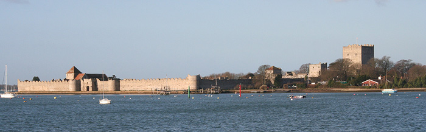

CURRICULUM VITAE (short summary)
PROFESSOR K M SHAW MA (CANTAB) MD FRCP
HONORARY CONSULTANT PHYSICIAN
- ACADEMIC DEPARTMENT OF DIABETES AND ENDOCRINOLOGY
- PORTSMOUTH HOSPITALS NHS TRUST, QUEEN ALEXANDRA HOSPITAL, HAMPSHIRE, UK
EMERITUS PROFESSOR OF MEDICINE
- FACULTY OF SCIENCE UNIVERSITY OF PORTSMOUTH, HAMPSHIRE, UK
EDUCATED AT:
- City of Norwich School (1954-1962) Downing College, Cambridge (First Class Hons) (1962-1965)
- University College Hospital Medical School, London (1965-1968)
APPOINTMENTS INCLUDE:
Clinical
- Honorary Consultant Physician, Portsmouth Hospitals NHS Trust (1978-current)
Academic
- Emeritus Professor of Medicine, School of Postgraduate Medicine, University of Portsmouth (from 1996)
- Director of Research and Development, Portsmouth Hospitals NHS Trust (1995 - 2008)
- Scientific Fellow, Zoological Society of London
- Member of IDOP University of Bedfordshire (2008-2014)
- External Examiner, University of Cardiff (2008-2011), University of Leicester (current)
Royal College of Physicians
- Member, Joint Speciality Committee for Endocrinology and Diabetes (1999-2010). Previous Hon. Secretary
- Member Advisory Panel for Service Review Visits
- Member RCP/RGP Diabetic Working Party & Long-Term Conditions Workforce Group (2002)
Diabetes UK
- Elected Member, Professional Advisory Council (2003-2012)
- Vice Chair, Specialist Care Committee (1998-2004)
- Chairman Professional Support and Development Committee (2006 - 2012)
- Member Research Strategic Review Committee
Association of British Clinical Diabetologists (ABCD)
- Founding Member and Trustee
- Hon Treasurer (1996 - 2006)
- Hon Chairman (from 2006 - 2008)
Editorial
- Editor in Chief, Practical Diabetes International (1992 - 2014)
Membership
- Fellow Royal Society of Medicine
- European Association for Study of Diabetes (EASD)
- American Diabetes Association (ADA)
- International Diabetes Federation (IDF)
- Trustee Solent Diabetes Association (2000-2014)
Miscellaneous
- Winner UK Hospital Doctor Diabetes Team Award 1998
- Invited Speaker, Labour Party Conference, Fabian Fringe (2001 & 2003)
- Expert Advisor to Gulf Veterans Illnesses Unit, MOD (2003) : Maritime & Coastguard Agency (2004-2009)
- Expert Consultee NICE/HTA (Diabetes)
- Member Medical Panel (Diabetes) DVLA, Dept of Transport (2005-2015)
- Member medical panel (Diabetes) Civil Aviation Authority (2010-current)
FORMER APPOINTMENTS INCLUDE:
- Research Fellow, Medical Research Council, Dept of Clinical Pharmacology,
- University College Hospital Medical School, London (1971-72)
- Medical Advisory Committee, British Diabetic Association (1982-86)
- Postgraduate Clinical Tutor, University of Southampton (1983-90)
- Chairman Wessex Diabetes & Endocrinology Association (1989-96)
- Chairman Wessex Associate Speciality, Education Committee (1994-96)
RESEARCH INTERESTS:
- Clinical and biochemical determinants of early nephropathy in Type I Diabetes
- Cardiovascular risk factors (including lipoprotein/lipid metabolism) and markers of endothelial dysfunction in diabetic vasculopathy
- Pharmacological evaluation of novel therapeutic agents in diabetes (including insulin analogues, insulin receptor sensitisers and other oral hypoglycaemic agents)
- 18th century naval medicine, James Lind: Haslar Physician.